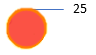
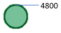

<!DOCTYPE html>
<html>
<head>
	
	<title>Incendies de forets</title>
	
	<link rel="shortcut icon" type="image/x-icon" href="images/logo3.png" />

	<link rel="stylesheet" href="leaflet.css" />
	<script src="leaflet.js"></script>
	<script src="for.js"></script>
	


	<style>

	    .titre {
           padding: 6px 8px;
           font: 20px/16px Arial, Helvetica, sans-serif;
           background: white;
           background: rgba(255,255,255,0.9);
           box-shadow: 0 0 15px rgba(0,0,0,0.2);
           border-radius: 100px
}

        .titre h4 {
           margin: 0 0 5px;
           color: #777;
} 
		#map {
			width: 600px;
			height: 400px;
		}
		.info {
		    padding: 6px 8px;
		    font: 14px/16px Arial, Helvetica, sans-serif;
		    background: white;
		    background: rgba(255,255,255,0.8);
		    box-shadow: 0 0 15px rgba(0,0,0,0.2);
		    border-radius: 5px;
		}
		.info h4 {
		    margin: 0 0 5px;
		    color: #777;
		}
	</style>

	
</head>
<body>


<script type="text/javascript" src="mapfr.js"></script>

<div id="mapid" style="width: 1550px; height: 800px;"></div>

<script>

	var map = L.map('mapid').setView([28.539006, 7.886224], 5);

	L.tileLayer('https://{s}.tile.openstreetmap.org/{z}/{x}/{y}.png', {
	    attribution: '&copy; <a href="https://www.openstreetmap.org/copyright">OpenStreetMap</a> contributors'
	}).addTo(map);
	
	///////////////////////////////////////////////////////////////////////
	// get color depending on population density value
	function getColor(ggggg) {
		return ggggg > 500 ? '#CD5C5C' :
		       ggggg > 200 ? '#FA8072' :
 							'#FFA07A';
	}

	function Monstyle(feature) {
		return {
			weight: 2,
			opacity: 1.0,
			color: 'white',
			dashArray: '3',
			fillOpacity: 0.3,
			fillColor: getColor(feature.properties.D1510)
		};
	}

	function highlightFeature(e) {
	    var layer = e.target;
	    layer.setStyle({
	        weight: 5,
			opacity: 0.7,
	        color: '#666',
	        dashArray: '',
	        fillOpacity: 1.0
	    });

	    if (!L.Browser.ie && !L.Browser.opera && !L.Browser.edge) {
	        layer.bringToFront();
	    }
	        info.update(layer.feature.properties);
        
	}

	function resetHighlight(e) {
    	geojson.resetStyle(e.target);
    	    info.update();

	}
	function zoomToFeature(e) {
    map.fitBounds(e.target.getBounds());
}
	function onEachFeature(feature, layer) {
    layer.on({
        mouseover: highlightFeature,
        mouseout: resetHighlight,
        click: zoomToFeature
    });
}
var info = L.control();

info.onAdd = function (map) {
    this._div = L.DomUtil.create('div', 'info'); // create a div with a class "info"
    this.update();
    return this._div;
};
var titre = L.control();


titre.onAdd = function (map) {
  var divTitre = L.DomUtil.create('div', 'titre'); 
  divTitre.innerHTML = "<h4>Incendies de forets</h4>";
  return divTitre;
};

titre.addTo(map);
// method that we will use to update the control based on feature properties passed
info.update = function (props) {
    this._div.innerHTML = '<h4>Incendies de forets</h4>' +  (props ?
        'Region : <b>' + props.NAME + '</b> <br> <br />Superficie incendiee (ha): ' + props.Superficieincendiee + ' </sup> <br> <br />Nombre d incendies :' + props.Nombredincendies + ' </sup>'
        : 'Merci de mettre le cursuer sur un Pays');
};

info.addTo(map);

	var geojson = L.geoJson(pay, {
		style: Monstyle,
	    onEachFeature: onEachFeature,
}).addTo(map);

////////////////////////////////////////////////////////////////////////circleMarker
	function setray(attr){
       return rayon=Math.sqrt(attr)*60/Math.sqrt(257);
	  
    }
	function setray2(attr){
       return rayon=Math.sqrt(attr)*60/Math.sqrt(48000);
	  
    }


var incendies
 
     incendies=L.geoJson(pnt, {
     pointToLayer: function (feature, latlng) {
      return L.circleMarker(latlng,{
        radius : setray(feature.properties.Nbincendi), 
        color : '#FF7C00',
        fillOpacity: 0.7,
        fillColor: '#FF0F00'
      }).bindPopup("Nombre d'incendies : " + feature.properties.Nbincendi);;
     }
       }).addTo(map);


	   
  

  var supf
 
     supf=L.geoJson(pnt, {
     pointToLayer: function (feature, latlng) {
      return L.circleMarker(latlng,{
        radius : setray2(feature.properties.Hetares), 
        color : '#005824',
        fillOpacity: 0.7,
        fillColor: '#41AE76'
      }).bindPopup("Superficie incendiée (ha): " + feature.properties.Hetares);;
     }
       })

	   
L.control.layers({
  "Nombre d'incendies":incendies, "Superficie incendiee":supf
   }, 
    {
  "Pays":geojson
   }).addTo(map);

   var legend = L.control({position: 'bottomleft'});
  
  


   

legend.onAdd = function (map) {
 var divLeg = L.DomUtil.create('div', 'info legend');
 divLeg.innerHTML +='Nombre d incendies <br>  <br> Superficie incendiee <br>  <br>  Source : EFFIS ';
 return divLeg;
}; 

legend.addTo(map);

L.control.scale().addTo(map);

    

     

        // var overlayMaps = {
        //     "geojson": geojson,
        //  };

        // //var control = L.control.layers(baseMaps, overlayMaps)
        // var control = L.control.selectLayers(  overlayMaps)
        // control.addTo(map);


</script>

</body>
</html>
